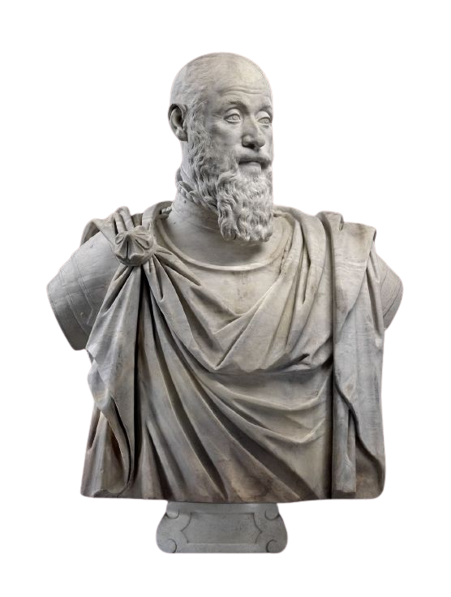

Zeno dari Kition
± 334–262 SM
Pendiri Stoicisme; mengajar di Stoa Poikile, menekankan hidup sesuai alam dan disiplin batin.
Stoicisme adalah aliran filsafat Yunani-Romawi yang menekankan hidup selaras dengan logos (akal budi), menerima hal-hal di luar kuasa, dan memelihara kebajikan sebagai sumber Eudaimonia — kebahagiaan sejati yang kokoh, bukan sekadar kesenangan sesaat.
Gulir ke bawah untuk melihat lebih banyak ↓
Lahir di Stoa Poikile, berkembang di dunia Yunani dan Romawi. Di bawah ini beberapa tokoh utama serta kontribusinya.
± 334–262 SM
Pendiri Stoicisme; mengajar di Stoa Poikile, menekankan hidup sesuai alam dan disiplin batin.

± 279–206 SM
Sistematisator doktrin Stoik, terutama logika proposisional dan etika kebajikan yang rasional.

± 4 SM–65 M
Filsuf dan negarawan Romawi; surat-surat moralnya menekankan pengelolaan emosi, kefanaan, dan kebijaksanaan praktis.

± 55–135 M
Mengajarkan dikotomi kendali: bedakan apa yang berada dalam kuasa kita dan yang tidak; fokus pada karakter.

121–180 M
Kaisar-filsuf; menulis Meditationes, catatan reflektif tentang keteguhan, kerendahan hati, dan tugas.
Empat pilar klasik Stoik dengan contoh penerapan harian yang ringkas.
Melatih penalaran jernih dan berpikir kritis. Latihan: saat menerima informasi, tanyakan: “Apa buktinya? Apa asumsi saya?” Hindari generalisasi tergesa-gesa.
Memahami keteraturan alam dan kefanaan. Latihan: refleksi pagi/sore tentang perubahan; syukuri hal yang hadir hari ini karena sifatnya sementara.
Kebajikan (kebijaksanaan, keadilan, keberanian, pengendalian diri) sebagai kebaikan tertinggi. Latihan: buat kompas nilai harian dan evaluasi keputusan terhadapnya.
Mengelola emosi dengan rasional: emosi bukan musuh, namun tunduk pada penilaian benar. Latihan: terapkan “jeda 3 napas” sebelum merespon keadaan menekan.
Di era serbacepat, Stoicisme membantu membedakan antara yang dapat kita kendalikan (niat, keputusan, tindakan) dan yang tidak (opini orang, cuaca, masa lalu). Dengan fokus pada karakter dan kebajikan, kita memperoleh ketenangan, ketangguhan, dan arah moral yang jelas.
“Kebahagiaan hidupmu bergantung pada kualitas pikiranmu.” — Marcus Aurelius
Manfaat praktis: resiliensi saat krisis, komunikasi lebih tenang, produktivitas yang etis, serta relasi yang sehat melalui empati rasional.
Koleksi kutipan Stoik (diterjemahkan) dan video pengantar singkat.
“Bukan peristiwa yang mengganggu kita, melainkan penilaian kita tentang peristiwa itu.”
Refleksi: telusuri penilaianmu.“Kita lebih sering menderita dalam imajinasi daripada kenyataan.”
Latihan: realitas-check tertulis.“Apa pun yang terjadi padamu telah disediakan bagimu sejak awal dan terjalin dengan takdirmu.”
Catatan: terima lalu bertindak.“Kebajikan berdiri pada tindakan yang selaras dengan akal yang benar.”
Fokus: akal budi → tindakan.Stoicisme, didirikan oleh Zeno dari Kition di Athena sekitar awal abad ke-3 SM, memiliki sejarah panjang yang dibagi menjadi tiga periode utama:
Periode ini dipelopori oleh Zeno, diikuti oleh muridnya Cleanthes dan Chrysippus. Chrysippus sangat krusial karena ia yang mensistematisasi ajaran Stoik ke dalam kerangka logika, fisika, dan etika yang koheren. Sayangnya, karya-karya dari periode ini sebagian besar hilang dan hanya diketahui dari kutipan penulis-penulis selanjutnya.
Tokoh seperti Panaetius dan Posidonius memperkenalkan Stoicisme ke dunia Romawi pada abad ke-2 dan ke-1 SM. Mereka mengadaptasi beberapa ajaran yang lebih kaku agar lebih dapat diterima oleh kalangan elite Romawi, dengan fokus pada tugas dan tanggung jawab publik.
Ini adalah periode di mana karya-karya Stoik yang paling lengkap dan terkenal ditulis. Berbeda dengan periode awal yang abstrak, periode ini sangat fokus pada etika praktis. Tokoh utamanya adalah Lucius Annaeus Seneca (seorang dramawan dan penasihat Kaisar Nero), Epictetus (seorang budak yang dibebaskan dan menjadi guru filsafat), dan Marcus Aurelius (Kaisar Romawi). Tulisan mereka—surat, diskursus, dan catatan pribadi—menjadi panduan utama bagi siapa pun yang ingin mempelajari Stoicisme hari ini.
Filsafat ini mengajarkan bahwa kebajikan (virtue) adalah satu-satunya kebaikan sejati dan bahwa hal-hal eksternal seperti kekayaan, kesehatan, atau reputasi bersifat netral (indifferents). Kunci kebahagiaan (eudaimonia) adalah hidup selaras dengan alam atau akal budi (logos).